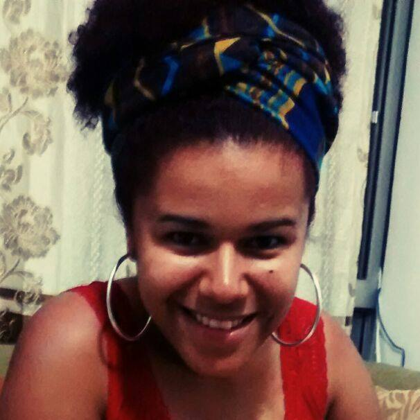

Funções / Correção de cor
As informações de cada perfil são de responsabilidade das profissionais.
Você quer conhecer profissionais de quais estados?
Marcar/Desmarcar todos
CARREGANDO ...
Janaina do Nascimento (SP)
Janaina do Nascimento
35 anos | São Paulo (SP)
jann.motion@gmail.com
Graduada em Comunicação Social - Publicidade e Propaganda, especializando-se em animação pelo Senac. Realizadora audiovisual, atua na área de pós produção (Montagem e Motiongraphics) de curtas, videoclipes e filmes publicitários.
http:///vimeo.com/jannnascimento
Outras atividades de Janaina do Nascimento
Animação |
Edição |
Motion graphics
Amostra de vídeo
 Jessica Figueiró (SP)
Jessica Figueiró (SP)
Jessica Figueiró
23 anos | São Paulo (SP)
figueiroh@outlook.com
Olá, sou a Jessica, nascida e moradora da zona leste de São Paulo. Tenho técnico de design gráfico e cursos de computação gráfica. Ao escolher minha graduação, decidir unir minha paixão por design/ilustração com a de cinema, e escolhi Animação. Participei de algumas masterclass de animação e fiz um curso de Teoria e Estilos Cinematográficos com Pablo Villaça. Até o momento só trabalhei com design, direção de arte e ilustração. Meus trabalhos de audiovisual foram realizados até agora somente na faculdade. Atualmente estou finalizando um curso de Front End, no qual pretendo fazer mais uma ponte entre minhas paixões.
http://flickr.com/jessicafigueiro
Outras atividades de Jessica Figueiró
Animação |
Desenho de efeitos |
Direção de arte |
Edição |
Roteiro

Amostra de vídeo
 Lindiwe Aguiar (BA)
Lindiwe Aguiar (BA)
Lindiwe Aguiar
Salvador (BA)
ogunjavideos@ogunjavideos.com.br
Videomaker e Jornalista formada pelo Liceu de Artes e Ofícios da Bahia, foi educadora de vídeo na Fundação Cidade Mãe por 8 anos. Coordenou e ministrou oficinas de produção de mídias em diversas ONG’s e instituições de ensino na Bahia. Em 2015 Lindiwe Aguiar recebeu o Troféu Bronze do Prêmio Mulher de Negócios Sebrae.
http://www.ogunjavideos.com.br
Outras atividades de Lindiwe Aguiar
Coordenação de Projeto |
Desenho de efeitos |
Direção |
Edição |
Oficinas e cursos livres |
Produção
Amostra de vídeo
 Lívia Uchôa (RJ)
Lívia Uchôa (RJ)
Lívia Uchôa
30 anos | Niterói (RJ)
liviamsu@gmail.com
Formada em montagem no curso regular, com duração de 3 anos, da EICTV, a Escola de Cinema de Cuba. Dirige filmes independentes desde 2011.
http://liviamsu.portfoliobox.net/
Outras atividades de Lívia Uchôa
Direção |
Edição |
Roteiro
Amostra de vídeo
 Natalie Matos (MG)
Natalie Matos (MG)
Natalie Matos
21 anos | Belo Horizonte (MG)
natalie.m.moura@gmail.com
A única certeza que mora em mim é a de que a cada passo aprendo algo novo e construo minha identidade. Como uma árvore que cresce regada ao amor e às dificuldades, dá bons frutos e flores, mas também amadurece antes da hora e às vezes até mesmo cai, mas, sempre lembra que tudo que se vive fortalece suas raízes. E sempre quando eu precisar vou ao meu interior e discuto comigo, para entender esse meu eu que às vezes recusa falar e prefere apenas sentir. Gradua em Cinema e Audiovisual e Técnico em Artes Visuais, hoje tenho projetos de visibilidade ao protagonismo da mulher preta e a juventude periférica.
http://nataliem-moura.wixsite.com/nataliematos
Outras atividades de Natalie Matos
Animação |
Assistência de Direção |
Captação de Recursos |
Captação de Som |
Cenografia |
Continuidade |
Direção |
Direção de Arte |
Direção de Fotografia |
Edição |
Fotografia Still |
Iluminação |
Mixagem e efeitos sonoros |
Pesquisa e desenvolvimento |
Preparação de Elenco |
Produção |
Roteiro
Amostra de vídeo
 Victória Moreira (SP)
Victória Moreira (SP)
Victória Moreira
21 anos | Osasco (SP)
victoria.mslopes@gmail.com
Victória Moreira, 21 anos, estudante de rádio, TV e internet da faculdade Cásper Líbero. Experiência com os softwares: Illustrator, Photoshop, Premiere, After Effects e Audition.
http://behance.com/victoriamslopes
Outras atividades de Victória Moreira
Continuidade |
Edição |
Mixagem e efeitos sonoros
Amostra de vídeo
Verônica Honorato (SP)
Verônica Honorato
26 anos | São Paulo (SP)
veronica.honoratosouza@gmail.com
Meu nome é Verônica e sou formada em Rádio e TV e curso no momento Motion Graphics. Me formei há três anos e comecei a trabalhar com vídeos de gastronomia e cobertura de eventos. No momento, trabalho com vídeos para a comunidade surda. São curtas metragens no formato humorístico e faço parte da equipe de direção de fotografia, edição e animação. Também atuo em alguns vídeos.